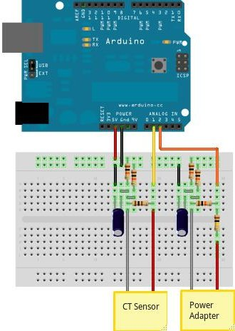
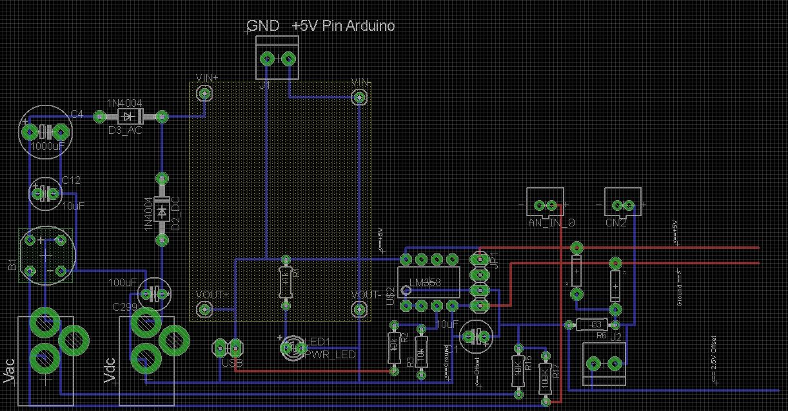
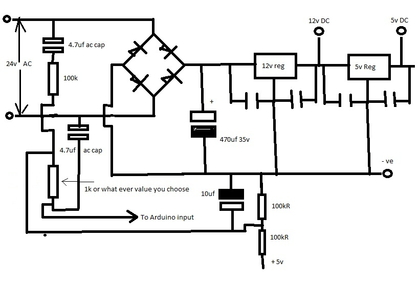

Back in November 2001, Nicky asked:
Is there a reason to not share the 2.5V reference for both current sensing and voltage sensing circuit?
My circuit has only one 2.5V reference but it is buffered using an op amp (LM358, single-rail) in voltage follower mode. With this modification in place, I'm seeing test values of emon1.realPower that are both repeatable and linear. My system's performance has undoubtedly been improved since the low-impedance reference point has been added.
I wonder if anyone else has tried this approach?
Re: Sharing the 2.5V reference
Sounds interesting, do you think you could post a schematic? Have any simulation/test results to demonstrate the improvement?
Re: Sharing the 2.5V reference
Thanks for your interest Glyn, a circuit sketch is attached.
I don't have any formal results, I just know that my breadboard circuit became much more stable when I switched to this alternative design. In its original form, I think that each sensor must be slightly pulling its reference point to and fro. But when a buffer is added, the single reference becomes rock steady, just like the power rails.
Hopefully someone else will be able to check this out. I would be very surprised if the outcome was not favourable.
Re: Sharing the 2.5V reference
I did attach it, honest! The file is called MyInputCircuits.jpg and it's sitting on my Mac's desktop.
Maybe I need to also tick the 'List' box ...
Re: Sharing the 2.5V reference
I have just tried your circuit and it works great, i wonder if you could show me how to add a second current clamp into the circuit. As a beginner to electronics i am not sure sure on how to do this.
Thanks
Re: Sharing the 2.5V reference
Hi jimjam, delighted to hear that this arrangement works for you too. I would add a second current sensor like this:
Re: Sharing the 2.5V reference
Thanks very much ill give it a try
Re: Sharing the 2.5V reference
I have a spare power supply box which i would like to use to house all my equipment it has a secondary winding of 16.5v ac. can i use this instead of a 9v ac adaptor, if so do i have to change the values of the r4 an r5 resistors.
Re: Sharing the 2.5V reference
Jimjam:
Yes to both. But are you using radio to transmit the data? If yes and it is a metal box, you might find you have very limited range or no range at all.
Don't believe the secondary winding voltage. The voltage stated will be the voltage on full load, you will need to find the voltage on no load (measure it with a voltmeter!), then recalculate the resistor values so that you get about 1 V across the 'bottom' resistor. If the no-load voltage is (say) 19 V and the 'bottom' resistor is 10 kOhm (i.e. the present value), then the 'top' resistor should be 180 kOhms. You'll need to calculate your voltage calibration constant following the steps here (but using the correct numbers of course) then finely adjust it by measuring the mains voltage (TAKE CARE) to show the correct value (it is best to calculate first, then if there is a large discrepancy it indicates that something is amiss that needs investigation).
(Which circuit diagram do you have? According to me, the resistor you need to change in the emonTx is R13, and if you look at the theory here the resistor to change is R2).
Re: Sharing the 2.5V reference
I have checked the voltage on no load and it is 16.5v and i am using the calypso_rae circuit that uses the opamp. which is about 6 posts up from this one. Tell me if i am wrong but would 100k for r4 and 7.5k for r5 be ok
Re: Sharing the 2.5V reference
You need to measure both the mains and the output voltage in order to do the sums correctly.
The UK mains voltage is 230 V +10% -6%, but still centred on 240 V.
If you measured 16.5 V at 240 V mains voltage, then with 100 kOhms and 7.5 kOhms you will have 1.4% in hand. The mains can rise by nearly 6% and you need a further 3% for resistor tolerances - assuming you use 1% components - and you're already in trouble. But if you measured the transformer when the mains was at its minimum, then you are in even more trouble.
The values you suggest don't leave room for mains voltage variation or component tolerances. If you want the 'top' resistor to be 100 kOhms, then the 'bottom' one needs to come down quite a lot.
Re: Sharing the 2.5V reference
This was measured at mains voltage of 253v my voltage is very high but very stable as the tranformer is next door to my house and never drops below 253v
Re: Sharing the 2.5V reference
jimjam, the AC source that I'm using is marked 9V, so is probably around 12V rms when unloaded. That's a peak-to-peak voltage of around 34V. A 10:1 divider will transfer just one eleventh of this amplitude to the Arduino, say around 3V p-t-p. Centred at 2.5V, a 3V p-t-p signal sits nicely within the 0-5V range of the ADC.
If your AC source is 16V, around 33% higher than the one I'm using, then you may wish to include a bit more reduction in your voltage divider. 100k and 7k5 have a ratio of 13.4 so you will be feeding one fourteenth of your signal to the Arduino.
This matches the arrangement that I'm using almost exactly, but if you want to be on the safe side, you could certainly reduce the lower resistor some more without any problems. Providing that it fits within the 0-5V range, the amplitude of the voltage-sensor's signal is really not important
The amplitude at the current-sensor's input is much more important because this circuit needs to work with signals of widely different amplitudes. Using the full range of the ADC for the largest current that you need to measure is probably worth getting right.
Although I've not actually calculated my current sensor's values (sorry Robert!), its performance does seem to be linear well above the max level of 3kW that I'm interested in. If this circuit starts to 'clip' when the electric shower and kettle are both on, it really doesn't matter because my power-diverting circuit clearly needs to be off in that situation. Do
n'tremember (or don't forget) to fit 'clamping' diodes to protect your Arduino!Re: Sharing the 2.5V reference
You mean DO REMEMBER!
Re: Sharing the 2.5V reference
jimjam,
I presume from what calypso_rae says that you are using your Arduino at 5 V. In that case the maximum voltage you want out of the divider chain is 5 / 2 / 1.414 = 1.77 V rms, less 3% for resistor tolerances (because the center 2.5 V can be 1% out, reducing the range by that, and each resistor in the divider can be 1% out, and if all 3 conspire against you, you need to allow 3%), so 1.71 V rms.
You have 16.5 V out at 253 V in (so you should not get any more than that), therefore you need to divide the 16.5 V down to no more than 1.71 V. Keeping the 'top' resistor at 100 kOhms, the 'bottom' resistor needs to be 11 kOhms, giving you 4% in hand. (12 kOhms is too big - you will clip the voltage wave even if the resistor tolerances are kind to you). 10 kOhms would be fine also.
Your calibration constants are 154.71 for the 100 k / 11 k divider chain, 168.67 for the 100 k / 10 k divider chain, and 219.79 for the 100 k / 7.5 k divider chain.
As calypso_rae says, it's not vital that you get too close to the maximum input because the voltage varies by only 16%, whereas current varies by 3 orders of magnitude or more.
Re: Sharing the 2.5V reference
Im just soldering everything up now to an arduino mega prototype shield and will be fitting that to a arduino and an lcd screen which will all piggyback together. I will use the lcd to give power being sent to the immersion and also total power sent for the whole day.
Re: Sharing the 2.5V reference
@calypso_rae: why o why did I not think of using an opamp for the 2V5 reference? Brilliant idea!
Re: Sharing the 2.5V reference
hi Calypso, i wonder if you can help. i have built your design of the MK2_PV controller and used the MK2_PV_router code on an arduino nano.
i have commented out the Debug line as suggested to get it to work in real time.
i dont have a solar panel setup like you have, but im doing this for my parents house who do.. i have simulated the setup as your youtube video.
with NO AC current running at all the energy bucket is rising, and will eventually turn on the 100watt light bulb i have as my load, it dosnt flash/flicker in anyway, just stays on, can you determine from this serial data results what could be wrong.
ive used all the components as your reference design, any help would e great...
In NORMAL mode ...
cyc# 5, sampleV 404, fltdV 2.98, sampleV-dc -169, cumVdeltas -2181.45, prevDCoffset 595.52, refFltdV 573.70, enInBkt 0.00
cyc# 505, sampleV 561, fltdV 15.63, sampleV-dc 0, cumVdeltas 1.55, prevDCoffset 560.82, refFltdV 560.84, enInBkt 48.56
cyc# 1005, sampleV 579, fltdV 33.40, sampleV-dc 18, cumVdeltas 60.52, prevDCoffset 560.34, refFltdV 560.95, enInBkt 134.88
cyc# 1505, sampleV 566, fltdV 20.15, sampleV-dc 5, cumVdeltas -61.95, prevDCoffset 561.57, refFltdV 560.95, enInBkt 343.47
cyc# 2005, sampleV 569, fltdV 23.55, sampleV-dc 7, cumVdeltas 90.68, prevDCoffset 560.16, refFltdV 561.06, enInBkt 488.39
cyc# 2505, sampleV 575, fltdV 29.51, sampleV-dc 14, cumVdeltas -10.15, prevDCoffset 560.60, refFltdV 560.50, enInBkt 586.91
cyc# 3005, sampleV 560, fltdV 14.11, sampleV-dc -1, cumVdeltas 38.62, prevDCoffset 560.66, refFltdV 561.04, enInBkt 715.90
cyc# 3505, sampleV 571, fltdV 25.11, sampleV-dc 9, cumVdeltas -11.92, prevDCoffset 561.33, refFltdV 561.21, enInBkt 930.74
cyc# 4005, sampleV 576, fltdV 30.09, sampleV-dc 14, cumVdeltas 21.92, prevDCoffset 561.05, refFltdV 561.27, enInBkt 1054.75
cyc# 4505, sampleV 579, fltdV 32.65, sampleV-dc 17, cumVdeltas 49.98, prevDCoffset 561.32, refFltdV 561.82, enInBkt 1264.79
cyc# 5005, sampleV 567, fltdV 21.17, sampleV-dc 6, cumVdeltas -50.70, prevDCoffset 561.24, refFltdV 560.74, enInBkt 1328.38
cyc# 5505, sampleV 576, fltdV 30.01, sampleV-dc 14, cumVdeltas -62.04, prevDCoffset 561.95, refFltdV 561.33, enInBkt 1431.04
cyc# 6005, sampleV 563, fltdV 17.16, sampleV-dc 1, cumVdeltas 113.59, prevDCoffset 560.14, refFltdV 561.28, enInBkt 1462.63
cyc# 6505, sampleV 564, fltdV 18.76, sampleV-dc 3, cumVdeltas 21.63, prevDCoffset 560.44, refFltdV 560.66, enInBkt 1734.11
cyc# 7005, sampleV 560, fltdV 13.52, sampleV-dc 0, cumVdeltas -42.33, prevDCoffset 561.22, refFltdV 560.80, enInBkt 1890.24
cyc# 7505, sampleV 574, fltdV 28.95, sampleV-dc 23, cumVdeltas 1603.58, prevDCoffset 534.84, refFltdV 550.88, enInBkt 2073.82
cyc# 8005, sampleV 552, fltdV 6.10, sampleV-dc -8, cumVdeltas 17.93, prevDCoffset 560.14, refFltdV 560.32, enInBkt 2230.14
cyc# 8505, sampleV 547, fltdV 0.62, sampleV-dc -13, cumVdeltas 3.83, prevDCoffset 560.65, refFltdV 560.69, enInBkt 2400.73
cyc# 9005, sampleV 573, fltdV 26.58, sampleV-dc 12, cumVdeltas -24.24, prevDCoffset 560.50, refFltdV 560.26, enInBkt 2496.35
cyc# 9505, sampleV 566, fltdV 19.70, sampleV-dc 5, cumVdeltas 41.13, prevDCoffset 560.45, refFltdV 560.86, enInBkt 2542.17
cyc# 10005, sampleV 565, fltdV 19.08, sampleV-dc 4, cumVdeltas 21.13, prevDCoffset 560.05, refFltdV 560.26, enInBkt 2820.60
cyc# 10505, sampleV 559, fltdV 13.40, sampleV-dc 0, cumVdeltas -5.24, prevDCoffset 559.87, refFltdV 559.82, enInBkt 2926.51
cyc# 11005, sampleV 573, fltdV 26.91, sampleV-dc 12, cumVdeltas 22.34, prevDCoffset 559.93, refFltdV 560.15, enInBkt 3027.13
cyc# 11505, sampleV 549, fltdV 3.02, sampleV-dc -12, cumVdeltas 178.64, prevDCoffset 559.51, refFltdV 561.30, enInBkt 3244.27
cyc# 12005, sampleV 563, fltdV 17.38, sampleV-dc 3, cumVdeltas 15.25, prevDCoffset 559.81, refFltdV 559.97, enInBkt 3432.68
Re: Sharing the 2.5V reference
Hi Tony, glad to hear that the videos have been of some use. Such feedback is always welcome.
I don't think there's anything wrong with your setup, it looks fine to me. I can think of two reasons why your load is not flicking on and off as you're expecting it to do:
1. If your CT is not also clipped around the cable which supplies your load, then no balance will be taking place. Although your energy bucket's level is being increased by your PV simulator, it is never being decreased by anything. Balance (flicking) only occurs when the two flows of energy are in balance. When simulating this on a test rig, your CT has to encircle individual cores from both cables.
2. If your dump load is rated at less than your 'PV', then the bucket's level will continue to rise, even when the load is fully on. I would suggest using a 60W or 100W bulb as your 'PV, and a much larger appliance, e.g 3kW, as your dump load. Once the bucket's level reaches 1800J, I feel sure that your load will start flicking as you're expecting it to do :)
It might be helpful to remove some of those display lines. Your DC offset figure of 560 is a little high, but is unlikely to cause you any problem. It just means that your Vref resistors are not particularly well matched. Make sure that you're not clipping either waveform at the upper end of the ADC's range. The ideal DC offset value is at the centre of its 1-1023 range, i.e. around 512. My MinAndMaxValues sketch will display your raw sample streams as graphs so you get a good feel of how much of the available range you're using.
As of a couple of days ago, a revised version of the sketch is available; the Mk2a. This should work straight away on your rig and I would definitely recommend using this version rather than the original. For a start, it has a built in calibration mode so you can easily see what's going on. Once you've got the balance mechanism working, TALLYMODE can show you both sets of energy contributions on the same graph (if you port the data into a spreadsheet). But even just looking at the numbers on the Serial monitor, it's fairly straightforward to see what's going on.
Re: Sharing the 2.5V reference
hi Robin
thanks for your reply, ive took a photo of my setup, hopefully attached, the left side of the board is the PV simulation side, i can switch a bulb on and/or a heavier load via the socket, the right side is the Triac circuit and immersion heater simulated with a 3KW kettle.and/or a bulb.
the switched spur allows me to short out the triac and run the load normally.
after checking and checking, also running your minmax code i discovered the CT on the heater side wasnt wired up correctly, i put the CT on the live wire that goes to the switched spur.(which has no current unless you switch spur on) of course it needs to go to the triac live...
well its working at the moment with just one issue, because the energy bucket is slowly creeping up all the time with no PV current flow the kettle flashes on now and again... like you said, this is probably due to component tolerances, i will check this now.
thanks for a great project, as you will see in the photo i already have a 128 x 64 display with a RTC module ready to go.
Tony
edit: you can see my error in the photo, ive just noticed it, the TRIAC wire doesnt go through the CT
Re: Sharing the 2.5V reference
What a beautifully laid out test rig. It must be so much easier to follow what's going on when you can see everything tidily in front of you. Puts my Heath Robinson lash-ups firmly in their place!
I look forward to hearing how you get on when integrating my power-routing code with whatever else you need to be doing.
Re: Sharing the 2.5V reference
thank you for the compliments on my layout, if it wasnt for your "lash-ups" though, we wouldnt be doing this i guess, so dont mock your work, its genius..
the display is currently working with the time and date at the moment, but i want it to show KWh used/generated if thats possible. also to have the display remote, maybe a handheld device. the inverter at my parents house is in the loft, and the mains DB under the stairs, so its not practical to have the display there.
im sure this addition will save them quite a packet on gas bills heating there water, its brilliant..
some screen shots i took the other day
thanks
tony
Re: Sharing the 2.5V reference
very interesting the idea of creating a comon rail of 2.5V. In the past I tried using a voltage dividir and feed all CTs from it but ended up giving very bad results after adding the 4th or 5th CT.
I will try this opamp solution, I am designing my own shield so I stil have time to integrate this if results are favorable. It will also simplify a lot the shield cause 3 resistors per CT are not needed any more.
It wil be my first time with opamps so I hope everything turns out good and its worth it.
thanks calypso_rae
Re: Sharing the 2.5V reference
Hi, thanks for the feedback.
Like many others, I have struggled in vain to get a voltage divider circuit to work satisfactorily with multiple sensors. That approach is fine for a single sensor because its lack of stability can be taken care of by calibration. But as soon as a second sensor is connected, cross-talk invariably results.
The op amp solves this problem at a stroke. It's a fit-and-forget solution, and should be ideal for your needs.
Re: Sharing the 2.5V reference
Great !
Could you explain the reason for the 4148 diodes? thank you very much
Re: Sharing the 2.5V reference
Their only purpose is to protect the Arduino against damage in case of overvoltage. A belt-and-braces approach, in parallel with the Arduino's own internal protection diodes.
This is a standard OEM precaution which I've followed. There has been lots of discussion about this in recent months.
Re: Sharing the 2.5V reference
Hello Capypso, I finally got around to test the single rail 2,5V with your opamp solution.
I am attaching 2 pictures which say it all. Everything looks good without a load, however if I add a LED then I am loosing the 2,5V rail. I am using a LED for testing/understanding before moving this solution to my installation.
Any idea what is happening?
Thank you very much, I really look forward for any help cause I think its a great solution
:btw, diodes are not included yet, will include them when adding the circuit to the arduino.
:How much current can the opamp handle? I guess that the CTs will not move much current however I am currious in case there is a limit.
thank you so much to anyone that can help
Re: Sharing the 2.5V reference
Where is the series current-limiting resistor that your LED needs? I think the current is being limited by the maximum current that the op-amp can supply.
Re: Sharing the 2.5V reference
There is normally a series resistor to limit the current through an LED. Maybe that's the problem. The 2.5V buffered output would not normally need to drive any current. It just needs to resist being pulled around by the secondary coils of each input sensor.
If you connect up a pair of sensors for voltage and current, and run my MinAndMaxValues tool, both channels should show 512 or thereabouts, this being the mid-point of the ADC's output range. If you then apply an AC voltage, output values for the voltage channel should change to maybe 100 - 900 ish, but the value for the current channel should remain unchanged.
If this occurs as described, then your op amp is doing its job just fine. An unbuffered shared reference would not pass this test as the mid-point gets repeatedly moved around by its associated secondary coils. Provided that each input channel is kept separate, as on the emonTx, this lack of rigidity does not appear to cause a problem; it just reduces very slightly the effectiveness of each sensor.
Think of a boat in the water when someone runs repeatedly from end to end. Providing that the boat has a reasonable mass (hence the C1 capacitor), the boat does not move much to and fro. My buffer is essentially lashing the boat firmly to the quayside so it can't now move at all.
Re: Sharing the 2.5V reference
Hi Robert, you are right, in that picture there is no resistor but i did mount one and the voltage drop was even bigger. Thanks for looking at it.
EDIT: Just went back to the bench and tried again and VOILA, it is working correctly now, I have 2,5V with the led connected. I guess all its needed is "some" resistance right? I mean, it will keep 2,5V as long as you have even a small resistance there (I have tried big and small value resistors and it worked) Thank you, I dont know what happened in my earlier test.
Hi Calypso thank you for a detail answer, as said above its working now. however I still dont understand the "the 2.5.would not normally need to drive any current".
I believe that the CTs are generating a current to flow, right? I dont know if this is big or small, i guess small. But I thought that theses currents were going through the opamp feeding the CTs. maybe i am misunderstanding something
EDIT: In the case of the LED, depending on the resistor I use it will allow more or less current to flow through it, that means current flowing through the opamp. So where is the limit?
Thanks again to both of you, really helpful and learning new stuff from you two as always ;)
Re: Sharing the 2.5V reference
When the LED is glowing, there will be approximately 2V between its pins. A suitably sized resistor should always be put in series with an LED to limit the flow of current. If you put an LED directly between your 2.5V rail and ground, something is likely to complain!
To get a flow of, say, 10 mA through the LED, you would need to add a resistor in series that gives 10mA when 2.5V - 2V = 0.5V is applied. Using R (in K) = V (in volts) / I (in mA) gives 0.5 / 10 = 0.05K = 50R.
At its maximum rating, your CT will produce around 50 mA but that current only flows through its secondary coil and your burden resistor. The purpose of the reference supply (i.e. the output from your op amp buffer) is to fix one end of each of your secondary circuits to a known level. It takes minimal current to do this, very much less than is required to make an LED glow.
Re: Sharing the 2.5V reference
wow thanks again.
The thing about the LED was clear, but thanks for reminding in such a detail and nicely explained.
And whats more important, the second part, my brain just switch on and understood it! I was thinking of the 2.5V rail as a power supply to the CT, when in reality the CT is the one moving the current. and we only need the 2.5V as the offset, as you say,. very little current flows for this.
Im really happy cause its totally clear now. Its my first time with opamps and had to understand what was happening. Thank you so much for your help! I just subscribed to your youtube ;)
Thanks
Re: Sharing the 2.5V reference
Just to add to Robin's explanation, many op-amps have an internal current limiting circuit on their output. It is likely (I've not checked the data sheet to see if it does!) that would control the current into the LED, and the voltage would drop (as you saw) as it did so.
Re: Sharing the 2.5V reference
hello calypso,
after successfully implementing the lm358 to create the 2.5v reference, i went to include the AC sensing and apart from burning the lm358 i am confused cause i noticed a difference between the point you insert the 2.5 reference with respect to original Trystan design

I only have one lm358 left so cant continue testing without risking leaving my proyect unoperable if it burns again.
I think i first build your design idea, but with 100k and 10k cause i dont have 120k and 12k, the problem is that the output was higher than 5V to the analog pin.
please help me understand the difference, or what might have happened.
thanks a lot !!
Re: Sharing the 2.5V reference
Both versions of the input sensors work in the same way. There really is no difference that you need to understand.
On the attached sheet, I've drawn out the two types of current sensor for comparison. They both use the 2.5 V reference at the same place. With the original design, the circuit in the dotted box supplies only one sensor. With my version, the circuit in the dotted box supplies all sensors because it has a much lower output impedance.
The AC voltage sensor works in just the same way. If the amplitude of your waveform is too big, then that's a problem with the resistor chain that makes the signal small enough for the Arduino to measure. Several people have got this part wrong. The transformer's output signal needs to be reduced by at least a factor of ten before being supplied to the Arduino's An 2 pin.
If you do not have another LM328 op amp, you could simply replace it a big capacitor and carry on. The error would be very small, probably barely enough to notice. It's only when the current that you are measuring is very small that crosstalk from the voltage sensor becomes significant.
Why not try using RawSamplesTool, or its slightly smarter version, RawSamplesTool_4ss_2. If they don't work, the simplest tool of all is MinAndMaxValues. This will show you the raw values that the Arduino's ADC is generating.
All of these tools are listed at http://openenergymonitor.org/emon/node/1757
Re: Sharing the 2.5V reference
hi calypso thank you for your help
it was using your tools that i found out i was having a problem. I got a waveform which was over the limit and i started to investigate.
i am right now on it, it is very strange cause i have wire the 100k and 10k to the AC output (11.07Vac) and after the voltage divider i am getting 5.5Vdc between negative and the middle of the voltage divider.
any hint?
thanks as always.!!
edit:
I have setup the AC sensing on another arduino just to make sure the rest of my pcb was not causing problems. also used resistors to get the 2.5V instead of opamp.
using your tool...
millis() now = 0
recordingMayStartAt 5000
4
4
4
3
3
3
2
2
2
1
1
0
0
0
No of cycles recorded = 3
cycleCount 704, samplesRecorded 74
c .v |
c v . |
c v . |
c . v |
c . v |
c . v |
c . v |
c . v |
c . v |
c . v |
c . v |
c . v |
c . v |
c . v |
c . v |
c . v |
c . v |
c . v |
c . v |
c v. |
c v . |
c v . |
c . v |
c v . |
c v . |
c v . |
c v . |
c v . |
c v . |
c v . |
c v . |
c v . |
c v . |
c v . |
c v . |
c v . |
c v . |
minVoltage 142, maxVoltage 914, minCurrent 0, maxCurrent 0
not very nice isnt it?
I connected current pin 1 to ground to keep it out of the chart.
UPDATE !
sorry forgot the capacitor, check out the difference...
No of cycles recorded = 3
cycleCount 254, samplesRecorded 226
c v. |
c . v |
c . v |
c . v |
c . v |
c . v |
c . v |
c . v |
c . v |
c . v |
c . v |
c . v |
c . v |
c . v |
c . v |
c . v |
c . v |
c . v |
c . v |
c v . |
c v . |
c v . |
c v . |
c v . |
c v . |
c v . |
c v . |
c v . |
c v . |
c v . |
will try to use the opamp now on my proyect pcb, will report.
Re: Sharing the 2.5V reference
Hi, I cant figure out what im doing wrong. I have build a simpler version of my project, just the AC supply and reading.
I am using a bridge rectifier to power a switching regulator to generate the 5V for the arduino.
Before the bridge rectifier I take the two AC wires to the ACsensing circuit with the clamps.
I am reading 9Vdc on the middle of the AC voltage divider so I cant feed this to the arduino or ill break it.
Anyone sees where the problem can be?
Thanks a lot
Re: Sharing the 2.5V reference
You cannot use the same a.c. supply to feed the Arduino and the voltage sensor input if there is a common ground connection between input and output of your switching regulator. The voltage sensor we recommend is a transformer and the secondary winding "floats" at 2.5 V (or 1.65 V for the emonTx) above ground, and you must keep it completely separate from the Arduino ground.
The only ways you can do it using a single transformer for both power and voltage sensor are (1) use a half-wave rectifier (as in the emonTx3 - see the blog posts) or (2) use a differential input op-amp to sense the voltage or (3) use a transformer with two isolated secondary windings.
Re: Sharing the 2.5V reference
"use a transformer with two isolated secondary windings."
http://spiratronics.com/pcb-transformer-3va-9v9v.html
This is the transformer I use on the units I sell, I recently saw a post where someone had used the spare secondary as a power source successfully I cant find the post in question but the are some pictures attached at the top of-
http://openenergymonitor.org/emon/node/2044
You will have to be careful with filtering as the Arduino is quite a noisy beast, a 9v regulator would be in order.
Re: Sharing the 2.5V reference
Hello Robert, thanks for your help.
There is something I dont understand. Is all the problem on the switching regulator?
Cause back at home, I have my first unit i build based on openenergymonitor long time ago, there where schematics on how to use the AC as supply and for sensing. Cant seem to find the section of the website, probably is no longer available as it was an old design. I have attach a draft of my schematics back then.
The thing is, it worked. I had the AC supply going through a diode bridge and feeding a 7805 and this output into the "Vin". Also it is sensing the AC as it has been done always in this website.
So just to learn, is it the switching regulator the problem? I have notice what you say about joining the Grounds, if i do it, then i get the problem.
This is a major problem in my project, i had everything designed thinking the switching regulator could be a direct substitution of the 7805, wow lots of stuff to think about now and fix.
Re: Sharing the 2.5V reference
thanks richmc,
I about the regulator you mention, i have in a previous project a 7805 instead of the switching regulator, but it gets hot so I was hoping to "upgrade"
About the transformer, I wanted to keep high voltage out of the way, therefore keep using the AC-AC power supply as sold in this website. a 2 isolated secondary windings involves putting the transformer in my pcb which I really didnt want to do.
I hope i can find a solution to all this cause my design and pcb was based on thinking it would work.
thanks !
Re: Sharing the 2.5V reference
Just to share what my idea was....
I wanted to have a system with a AC and DC jack inputs. You could then power using AC and the software would do the AC sensing and power supply. Or you could power using DC and no AC sensing would be done, only power supply.
Do you see any solution possible for the AC sensing with my idea? I still dont understand if the fault is the switching regulator, as when using a 7805 it works correctly.
Thank you very much !! I really appreciate as my project just went stuck because of all this.

Re: Sharing the 2.5V reference
Can you post that up as a circuit diagram, would be easier to interpret .
Re: Sharing the 2.5V reference
of course ! thanks for looking into it!
Hope its ok to keep in this thread, if not i can open another one. but as im using the 2.5V reference with the opamp maybe its useful to stay here.
Re: Sharing the 2.5V reference
Think I've just twigged one problem, you are powering the Arduino with 5V, that is not enough the minimum is 7V for stable operation see here-
http://arduino.cc/en/Main/ArduinoBoardUno
the Arduino will be unstable and wont provide a regulated 5V O/P, you could use a 7808, (8V regulator) that would run cooler as well as its not having to drop so much voltage.
If you really don't want a pcb transformer then there is always this, made by the same company-
http://spiratronics.com/chassis-transformer-6va-9v9v.html
Re: Sharing the 2.5V reference
I am power using the +5V pin, isnt this correct?
So the 5V supplied by the switching regulator go into 5V directly
just noticed I wrote it wrong in the schematic. but im using 5V pin in reality, will update the schematic.
about the other problem, any idea?
Thanks
Re: Sharing the 2.5V reference
Sergegsx: i am right now on it, it is very strange cause i have wire the 100k and 10k to the AC output (11.07Vac) and after the voltage divider i am getting 5.5Vdc between negative and the middle of the voltage divider.
Are you absolutely sure that those two resistors are correct? If they were both the same value, then would explain why your AC voltage is only being halved rather than being divided by 11. I assume that you mean 5.5Vac rather 5.5Vdc.
If you disconnect the 240V AC supply, and there is no AC current running through your CT, then both of your sensors should sit quietly at 2.5V dc with no AC signal. When using RawSamplesTool, both traces should appear as a straight line running down the centre of the display.
Then if you connect the AC voltage supply, the 'v' trace should appear as a sinusoid covering around 80V of the available range. The 'c' trace should still appear as a straight line as before. Then, if you feed some AC current through your CT, you should a second sinusoid, more or less in phase with the first.
By adjusting the value of the burden resistor, you can arrange for the 'c' waveform to use most of the available range when the current flowing through the CT is the greatest value that you will ever want to measure.
My recommendation would to be to rely on what the Arduino is telling you (via its Serial interface using MinAndMaxValues and RawSamplesTool) rather than any kind of multimeter.
Re: Sharing the 2.5V reference
I suggest somebody draws a proper joined-up circuit diagram and then looks hard to see what interconnections there are that shouldn't be there.
Re: Sharing the 2.5V reference
Hi everyone, still fighting to find what to do here. hehe
calypso I have tried as you suggested but something happens when using the output from the switching regulator.
I have done two tests, lets see if we can figure out a solution.
1) I supply the +5V and GND to the 2,5V voltage divider FROM THE ARDUINO
2) I supply the +5V and GND to the 2.5V voltage divider FROM THE SWITCHING REGULATOR
(As soon as the GND from the switching regulator contacts with the negative from the voltage divider the chart goes crazy.
EDIT: I disconnected the AC wire that goes to the 2.5V rail, leaving the other AC wire to the other side of the 100K
Is it at all possible?, or as stated above, the switching regulator should not be used? why not? I have found this schematic, which basically uses linear regulators, would this be possible? I would like to use the switching regulator though.
http://openenergymonitor.org/emon/node/309

I dont have the 4.7uf ac cap in my setup, what are they for? could this be the problem?
Could it be that somehow current from the AC is going to GND? When I connect the +5V to the S.Regulator the curve is ok (but without the offset) however if I connect GND then it goes crazy.
thanks everyone
Re: Sharing the 2.5V reference
I have replaced the Switching regulator with a lm7805 to generate the +5V for the 2.5V rail and it has the same problem, therefore it seems that the switching regulator is not the problem.
.
Edit.
Added the AC 4.7uF caps, looks better. The 2.5V rail is a bit high, dont know why.
Re: Sharing the 2.5V reference
That schematic you found is totally rubbish. There is a fundamental mistake in it. Throw it away, do not use it.
If you take the trouble to read down that thread, you'll see that I posted a picture of that circuit simulated, showing exactly what the Arduino input would be: http://openenergymonitor.org/emon/sites/default/files/markbeal2.png (It is supposed to be a 1 V sine wave).
I will write it again in big letters this time:
YOU CANNOT DIRECTLY USE THE SAME SUPPLY FOR POWER AND VOLTAGE
(Rich, Robin: Sorry but you've both missed the fundamental mistake.)
But before you do, study it carefully, like I wrote earlier. At any non-zero frequency - that means 50 Hz - consider the capacitors to be a short circuit. Then the junction of the two 100 k resistors (2.5 V) is connected to ground through the 10 uF, the junction of the 1k and 100 k is also connected to ground through the 10 uF and the Arduino input is connected through the 4u7 capacitor directly to the bottom side of the a.c supply. Now you need to work out what voltage that is at with respect to ground. When the bottom right diode of the bridge is conducting, it is at (the 12 V regulator input voltage + 1 diode ~ 0.6 V), let's say 15 V with a load of ripple. In the other half cycle, when the bottom left diode is conducting, it is 1 diode below ground.
Now are you starting to see the problem?
Re: Sharing the 2.5V reference
I don't understand where this thread is going, or why. If either circuit is simply built up as published, it will surely work. As Robert says, the AC voltage source must be separate from any other circuit such as a power supply. Any normal mains transformer will do for the AC voltage source, but an encapsulated AC/AC adapter is the safest approach.
Rather than struggling with complex variations that are causing trouble, why not just build up one of the standard circuits which should work without any difficulty?
Re: Sharing the 2.5V reference
That was a very good explanation Robert ! THANKS !
I get now why its not working.
I find myself in a big doubt, 2 or 3 years ago I build a unit for home based on the very first designs of this website. And it works on sharing a AC-AC power supply both for powering and ACsensing.
nevertheless, as calypso says, I will stick to the know working setups. Lets not reinvent the wheel ;P
I am sorry calypso for so many messages on this thread, I just wanted to learn from all of you. As I said, all comes because I thought it was possible, and didnt understand why it was not working. Also I found out that my setup at home does not use an external regulator, but the arduino mega buildin + a bridge rectifier.
Nevertheless, I will update all my setup to use 2 power supplies, its the best approach as you say.
I am really sorry for all the questioning here, but you guys have helped me a lot, i have learned much from this exercise.
Thank you again!
I will therefore use calypso setup with the lm358 in my project, I think is one of the most well accepted in the forum.
Thanks ! ;)
Re: Sharing the 2.5V reference
Wrong Robert I quoted YOU saying you can use a transformer with two separate output windings hence two supplies. It seems that Serge is STILL trying to power the Arduino by shoving 5V into the 5V output,(AND DON'T SHOUT,IT'S RUDE).
Serge you need 7 to 12 Volts going into the 2.1mm socket fro the Arduino, that's why I said use a 7808 regulator, that is the method Arduino recommend, the 5 volts can then be got from the 5V pin of the arduino to power the op amp and divider.
I could quote the paragraphs from the Arduino website but I've done that twice already on other threads, just go and look here-
http://arduino.cc/en/Main/ArduinoBoardUno
See input voltage (recommended). Now are you starting to see the problem?
Re: Sharing the 2.5V reference
Well if I am not mistaken, you can also input 5V to the +5V pin, this way you are bypassing the Regulator, right?
I have been doing this for a loooot of time, and have 2 projects running like this for more than a year.
If its wrong practice, then please let me know. My intention by doing this is to avoid using the build in regulator as it was getting very very hot with everything connected, and therefore use an external Switching regulator or an external linear regulator.
I am fearing I have done also this wrong for ages...
( I must say in one of my MEGA there is no regulator, but on another MEGA I use the build in regulator is in its place)
Interesting...
http://arduino.cc/forum/index.php/topic,54334.msg409987.html#msg409987
It looks like its "possible" but not recommended. Oh well, I just learned another new thing. plus noticed that my two running 24/7 projects are badly powered. It just seemed a good idea not to depend on the onboard linear regulator. I guess I will look into the 7808, or a switching regulator which can give 7or8V instead of 5V
Re: Sharing the 2.5V reference
"Well if I am not mistaken, you can also input 5V to the +5V pin, this way you are bypassing the Regulator, right?"
I have sent you a PM, the Arduono is not stable with this please look at the web site. If they consider it unwise thats good enough for me.
By all means use an external 5V regulator to power other stuff if the arduino regulator cant handle it, but please take note of what Arduino say, they designed the board.
Re: Sharing the 2.5V reference
Rich,
It appears there might have been two problems, the regulator not working was being hidden by a much more serious one, that Sergegsx had tied the a.c. input to ground via the bias supply, and that was because he was following a flawed design.
Robin:
Don't you recognise the source of that flawed design? ! !
Sergegsx
I'm glad you've learned from this, don't worry about the many posts and there's absolutely no need to apologise for asking many questions.
I suggest you get hold of a good simulation program - that will allow you to explore designs like this and see how they do or don't work - at zero cost. I use Linear Technologies SwitcherCAD III. On the good side, it's free. On the bad side, its component library is restricted as far as general purpose components are concerned. But it works for me.
As I wrote earlier, there are 3 solutions to the supply problem. All except the half-wave rectifier involve removing a direct link between the a.c. sensing circuitry and the Arduino ground. If your switch-mode supply was transformer-isolated, you would not have had the problem because you would have broken the link.
Re: Sharing the 2.5V reference
I'm a little confused Robert, what flawed design are you referring to? can you link it I'm intrigued.
Re: Sharing the 2.5V reference
I believe he means this one...
http://openenergymonitor.org/emon/sites/default/files/ac_dc2_0.jpg
Re: Sharing the 2.5V reference
Yes, that was it. The author assured us at the time that his design worked perfectly.
I tried to run it on a simulator (Livewire) but it kept oscillating, so I gave up. More important things to do.
Re: Sharing the 2.5V reference
I am fearing I have done also this wrong for ages...( I must say in one of my MEGA there is no regulator, but on another MEGA I use the build in regulator is in its place)
You may be ok on that front. There is no one answer for all Adruino-like products. Every man and his dog designs Arduino compatible boards and add their own tweaks in the process. The power supply stuff is one area they all like to "add value". You really need to look at the particular product you're using to determine whether or not you can provide your own +5V, and it sounds like you have a bit of a mix in your collection.
There are 3 issues to consider (maybe more if anyone knows of others?):
1. your external +5V may not be as regulated as you think, so you risk blowing up your Arduino
2. you re-flash a new image while your external +5V is still connected. In that case you may have the output of two +5V supplies connected to each other.
3. your Arduino's unpowered on-board 5V regulator may not like having an external +5V jammed up its output
I tend to use ethernet for my all home automation stuff and so have several EtherMega Arduinos (basically an Arduino Mega2560 with onboard ethernet). They've thoughtfully added a jumper that allows the +5V line to be connected to:
. USB source
. on-board 5V regulator
. nothing
So long as you get that jumper right (i.e. 3rd option), there is no problem powering it externally. Get it wrong, and you'll blow up the on-board regulator.
Re: Sharing the 2.5V reference
"There is no one answer for all Adruino-like products."
The answer is to buy genuine Arduino, they have a terrific support site with sound advice that a lot of people seem to ignore for some reason.
"1. your external +5V may not be as regulated as you think, so you risk blowing up your Arduino"
As I posted earlier the arduino needs 7V+ for power 5V will compromise stability, powering from USB is not recommended, Thats not from me thats on the Arduino web site.
Re: Sharing the 2.5V reference
The answer is to buy genuine Arduino
Each to their own, I always say. I prefer to buy what best suits my requirements.
they have a terrific support site
As do many of the alternatives.
As I posted earlier the arduino needs 7V+ for power 5V
Only when you're feeding it via the DC-jack and on-board regulator. If you're feeding the 5V line directly, then it needs to be exactly 5V. 7V would be way to high. And by the way, different Arduino-compatible designs have vastly different specs for the DC-in supply as well. My EtherMega's rated max DC-in is 28V, don't try that on a stock Arduino design with linear regulators.
thats on the Arduino web site
And I'm sure it's good advice for their designs, and exact clones of their designs. But it does not necessarily apply to the myriad of other Arduino compatible designs out there who have designed completely different power supplies. If you're using an Arduino design, then yes, get your power supply specs from the Arduino webpage.
Re: Sharing the 2.5V reference
And by the way, different Arduino-compatible designs have vastly different specs for the DC-in supply as well.
Thats hardly a definition of compatible!
Only when you're feeding it via the DC-jack and on-board regulator
The way Arduino recomend powering the board.
I'm beginning to feel a bit like a parrot. :-)
Re: Sharing the 2.5V reference
Thats hardly a definition of compatible!
If it can run the exact same s/w, can use the exact same shields, but can operate with a wider voltage range on the DC-in jack, I'd call that compatible, but I'm not going to die in a ditch arguing the definition.... compatible or not compatible whichever you like.
The way Arduino recomend powering the board.
I think you meant "the way Arduino recommend powering their board". As I said earlier... if you're using an Arduino design or an exact clone then yes, get your power requirements from their webpage.
I'll continue to get the power requirements for my board from the manufacturer of my board... and even follow their jumper instructions on how to power the +5V line directly.
Re: Sharing the 2.5V reference
... and as the originator of this thread (which was never intended to be about the 5V supply), I'm saying nothing !
Re: Sharing the 2.5V reference
................I'm saying nothing else as well, I've lost my voice.:-0
Re: Sharing the 2.5V reference
With the right jumper settings I can even power my EtherMega over the cat5 cable; they fully support P-o-E. That's particularly useful when you have these things scattered about your house for home automation stuff. Rather than have wall-warts all over the place, they all get powered from your ethernet switch. Run one cat5 cable to a remote location, stick an Arduino on the end of it, and you get power and comms. It also means you can individually, remotely power cycle your Arduino (from anywhere in the world if your switch supports it).
That's the great thing about open source hardware... people take great designs and make them even better. But clearly if I need to know the specs for this stuff, I turn to my manufacturer, not to the generic Arduino pages. That's the only point I was trying to make above.
Re: Sharing the 2.5V reference
And it looks like even some official Arduino designs let you juice the +5V directly. The attached is from the Arduino page on the Leonardo (http://arduino.cc/en/Main/arduinoBoardLeonardo). Bottom line is, the only power specs that matter for your board, are the ones written for your board.
+5V. The regulated power supply used to power the microcontroller and other components on the board. This can come either from VIN via an on-board regulator, or be supplied by USB or another regulated 5V supply.